로드맵 지도로 길부터 봐요
영상은 '임베디드, 보이면 쉽습니다'라는 한 문장으로 시작해요. 이어서 FOC, CAN 통신, 포인터를 3D로 돌리는 장면을 몇 초씩 보여 주고, 그 모든 걸 담은 사이트로 넘어가요. 사이트가 가장 먼저 보여 주는 건 '어디서부터 어디까지 공부해야 하나'를 그린 로드맵 지도예요.
지도는 네 묶음이에요. 왼쪽 노란 칸이 기초(C 언어, 자료구조와 알고리즘, 디지털 논리, 컴퓨터구조), 주황 칸이 하드웨어(회로이론부터 계측과 디버깅 장비까지), 청록 칸이 펌웨어(기계어와 어셈블리, MCU(Microcontroller Unit) 펌웨어, 통신 프로토콜, RTOS, 펌웨어 설계와 품질), 보라 칸이 응용(제어공학, 모터 제어, 임베디드 리눅스, 자동차 소프트웨어 등)이에요. 칸 머리에 과목 수와 주제 수가 적혀 있고, 맨 아래에는 '직접 만들기'가 따로 붙어 있어요.
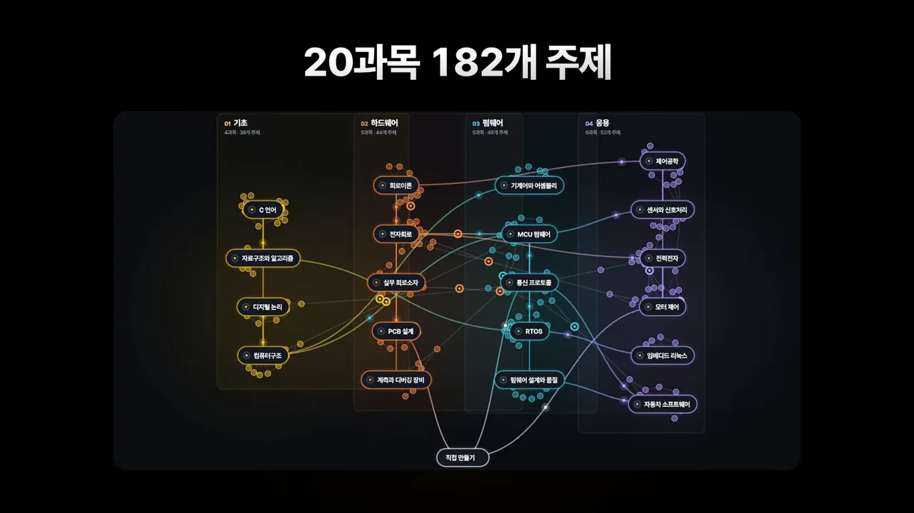
지도는 보기만 하는 그림이 아니에요. 과목 위에 마우스를 올리면 그 과목과 이어진 길이 켜져요. 아래 화면은 MCU 펌웨어에 커서를 올린 순간이에요. 앞쪽으로 컴퓨터구조와 전자회로에서 오는 선이, 뒤쪽으로 통신 프로토콜 → RTOS → 펌웨어 설계와 품질, 그리고 센서와 신호처리로 가는 선이 밝아져요. 커서 옆에는 레지스터, 개발 환경, 타이머 같은 세부 주제가 점으로 떠요.
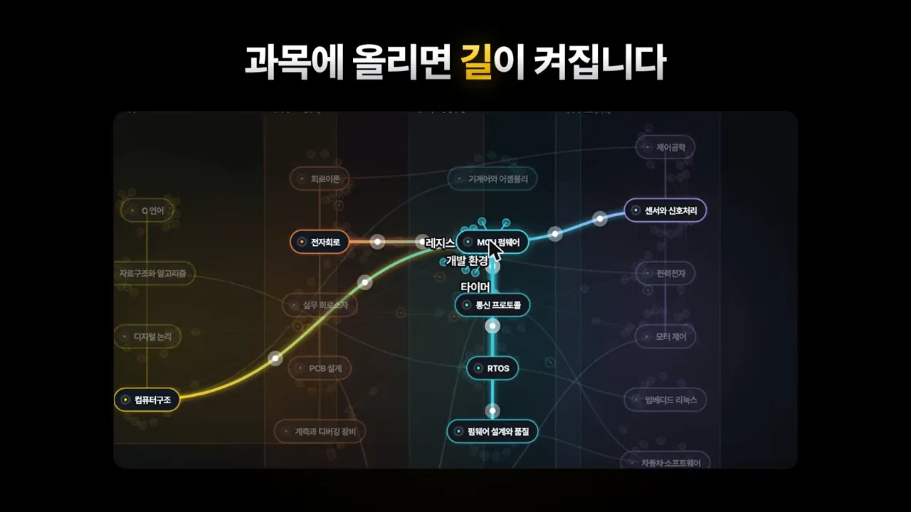
노트를 읽을수록 지도가 밝아진다는 점도 짚어요. 어디까지 공부했는지가 지도 위에 그대로 남는 셈이에요.
3D 실험실: 글 대신 돌려 보기
이 구간의 메시지는 '글로 읽는 대신 돌려 보면 이해된다'예요. 영상은 실험실을 하나씩 짧게 보여 주는데, 화면 왼쪽 아래에 실험실 번호와 이름이 붙어 있어요.
모터 제어: BLDC 6스텝과 FOC
첫 번째는 BLDC 6스텝이에요. 왼쪽에 회전자와 코일이 보이는 모터가, 오른쪽에 스위치가 줄지어 선 구동 보드가 있고, 둘 사이를 세 가닥 전선이 이어요. 6스텝 구동이 보드의 스위칭으로 모터를 돌리는 과정이라는 걸 한 화면에 담았어요.
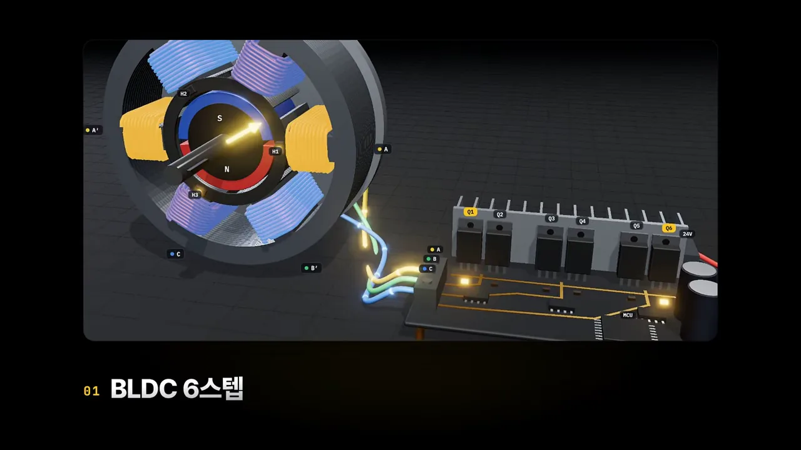
두 번째는 FOC 벡터 제어예요. 위에서 내려다본 고정자 코일 가운데에 화살표 두 개가 그려져 있어요. 코일 색이 바뀌면서 화살표가 따라 도는 모습이, FOC가 전류를 벡터로 다룬다는 걸 보여 줘요.
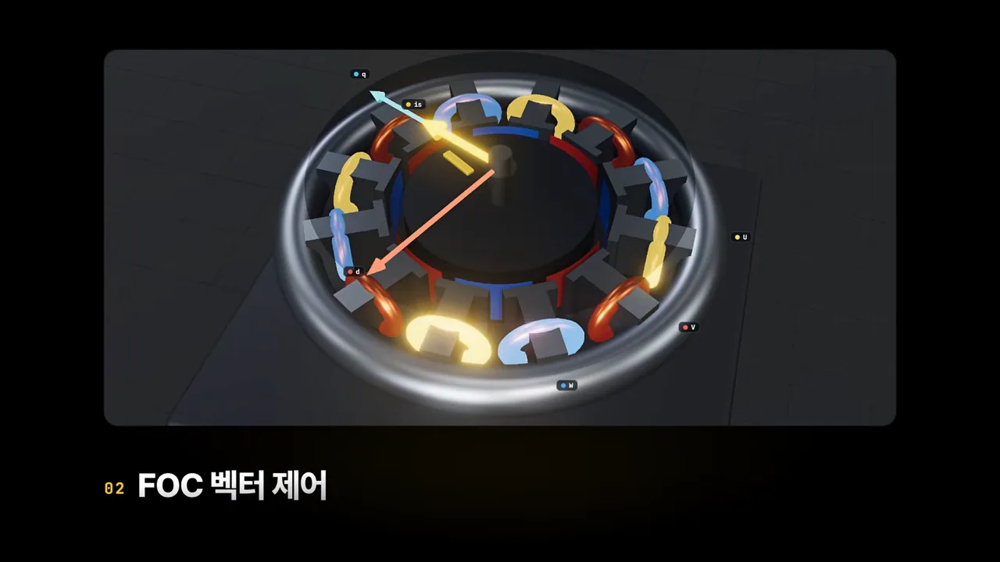
통신과 운영체제: CAN 중재와 RTOS 스케줄러
내레이션은 'CAN 중재'가 움직이는 걸 본다고 말해요. 이 실험실은 영상 첫머리에 잠깐 나와요. 위쪽에 CAN_H와 CAN_L 두 가닥 버스 선이 길게 놓이고, 끝에 120 Ω 종단 저항이 붙어 있어요. 그 아래 엔진(ID(Identifier) 0x100), 브레이크(ID 0x0A0), 계기판(ID 0x2F0) 노드 세 개가 버스에 매달려 있어요. 노드마다 보낼 비트가 블록으로 줄지어 있고, 맨 앞 줄의 '버스에 나타난 값'과 비교해서 동시에 보낼 때 누가 이기는지 비트 단위로 보여 줘요.
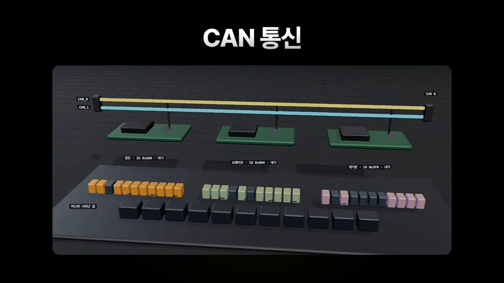
RTOS 스케줄러 실험실은 선반처럼 생겼어요. 층마다 태스크가 하나씩이에요. 위에서부터 센서(우선순위 3, 10 ms마다 2 ms), 통신(우선순위 2, 20 ms마다 6 ms), 표시(우선순위 1, 40 ms마다 10 ms), 맨 아래가 할 일이 없을 때 도는 idle이에요. 'CPU'라고 적힌 빛 덩어리가 옮겨 다니며 지금 실행 중인 태스크를 가리켜요. 이 장면에서는 통신 층에 있어요.
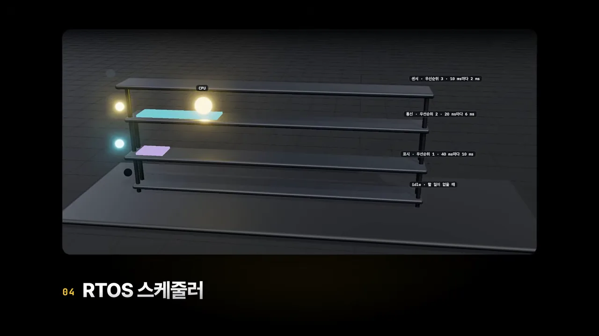
MCU 기초: 포인터, 인터럽트, PWM
포인터와 메모리, 인터럽트, PWM도 준비했다고 말해요. PWM 실험실은 브레드보드 위 LED(Light-Emitting Diode)와 모터에 오실로스코프를 물려 놓았어요. 화면에 뜬 사각파의 켜진 폭이 듀티비이고, 그 폭에 따라 LED 밝기가 달라지는 걸 보여 줘요.
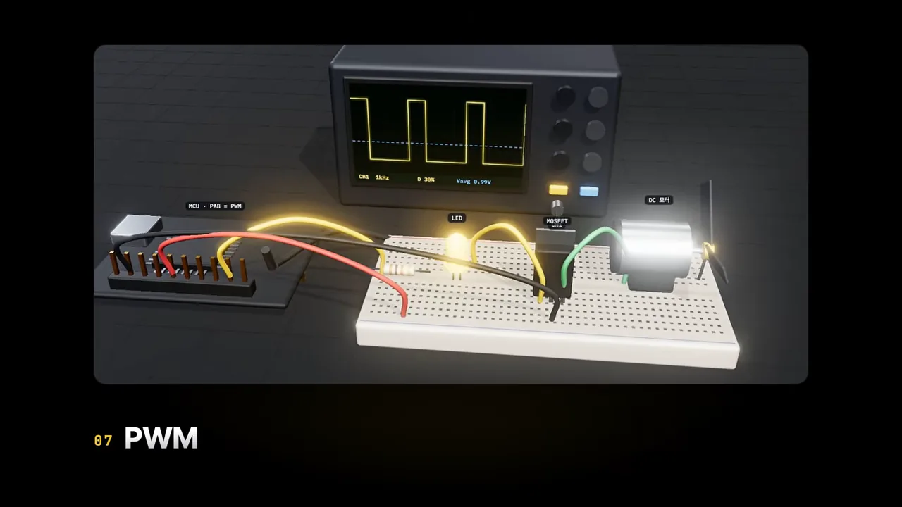
마지막으로 실험실 썸네일이 바닥에 깔린 화면 위에 큰 숫자 14와 '설치 없이 브라우저에서 바로'가 떠요. 실험실은 모두 14개이고, 따로 프로그램을 깔 필요가 없다는 뜻이에요.
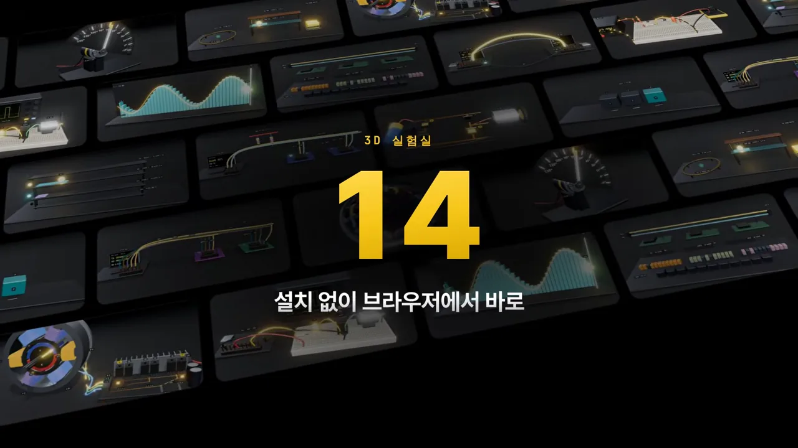
노트, 영상, 전자책과 공부 순서
노트는 로드맵의 주제마다 한 장씩 있어요. 화면 제목은 '노트 182개 그림 249장'이고, 내레이션은 그림을 250장이라고 어림해 말해요. 카드로 지나가는 예시는 풀업 저항은 왜 필요할까, PWM 기초 듀티비로 전압 만들기, 컴퓨터구조 메모리 맵이에요. 카드마다 회로도나 파형 그림이 하나씩 들어 있어요.
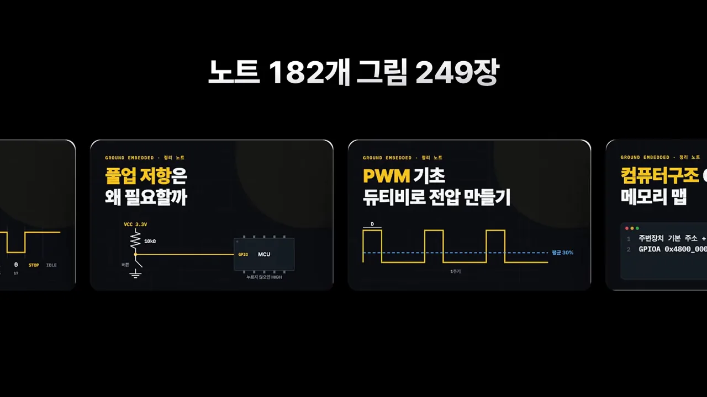
노트 속 코드는 오른쪽 위 '복사됨' 버튼 하나로 복사돼요. 예시는 GPIO(General-Purpose Input/Output) 핀 하나를 켜고, 500ms 기다렸다가 끄는 세 줄짜리 C 코드예요. 다 읽으면 다음 장으로 이어져요.
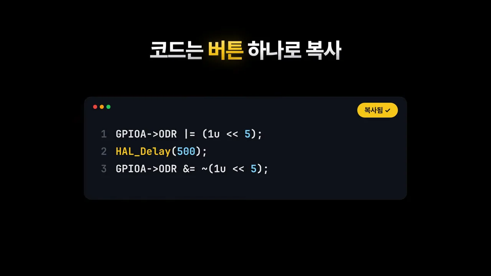
GPIOA->ODR |= (1u << 5);
HAL_Delay(500);
GPIOA->ODR &= ~(1u << 5);채널의 유튜브 영상 67편도 보는 순서대로 묶었어요. 화면 오른쪽 썸네일은 모터 시리즈예요. DC 모터, BLDC 모터, 전기차 모터, 3D 프린터 속 스텝 모터, 로봇 관절 속 서보 모터, 세탁기 속 유도 모터가 차례로 놓여 있어요.
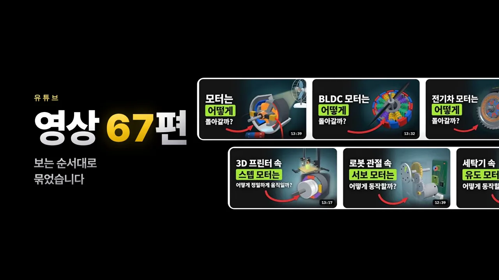
전자책은 세 권이고 0원이에요. 표지는 '모든 직렬통신 한 번에 끝내기', '모든 센서 한 번에 끝내기', 'BLDC 모터 제어' 입문서예요. 이메일만 남기면 PDF(Portable Document Format)로 받는다는 문구가 제목 아래 붙어 있어요.
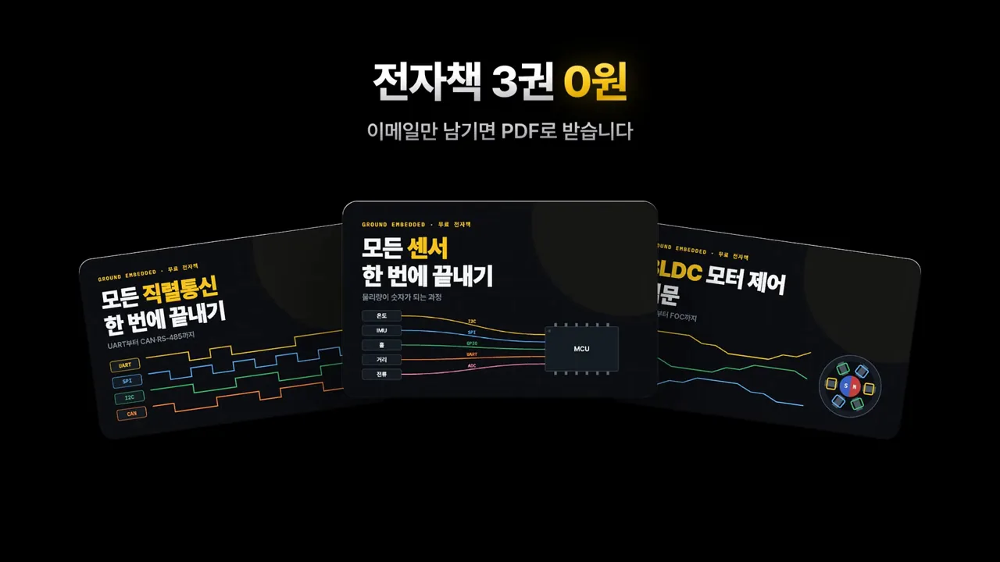
사이트는 영어로도, 휴대폰에서도 같은 화면으로 열려요. 휴대폰 세 대에 로드맵, BLDC 6스텝 시뮬레이션, 영어판 FOC 노트(PMSM(Permanent Magnet Synchronous Motor) and Field-Oriented Control)가 떠 있어요.
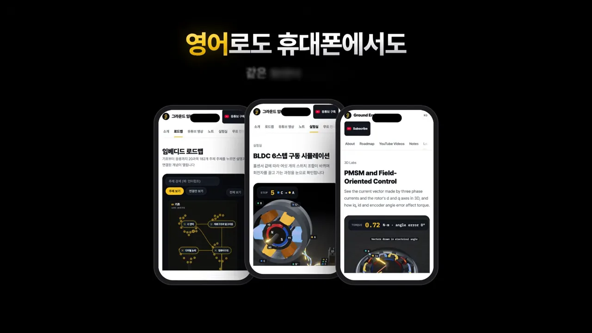
영상이 권하는 공부 순서
마무리에서 영상은 세 단계를 권해요. 영상으로 먼저 보고, 노트로 정리하고, 3D로 돌려 보라는 거예요. 아래 그림은 이 순서와, 단계마다 사이트에서 쓰는 자료를 함께 묶은 거예요.
영상에 나온 숫자를 한데 모으면 이래요.
| 자료 | 영상에 나온 규모 | 특징 |
|---|---|---|
| 로드맵 지도 | 20과목 182개 주제 | 과목에 올리면 이어진 길이 켜지고, 읽은 만큼 밝아져요 |
| 3D 실험실 | 14개 | 설치 없이 브라우저에서 바로 열려요 |
| 노트 | 182개, 그림 249장 | 주제마다 한 장, 코드는 버튼으로 복사해요 |
| 유튜브 영상 | 67편 | 보는 순서대로 묶었어요 |
| 전자책 | 3권, 0원 | PDF로 받아요 |